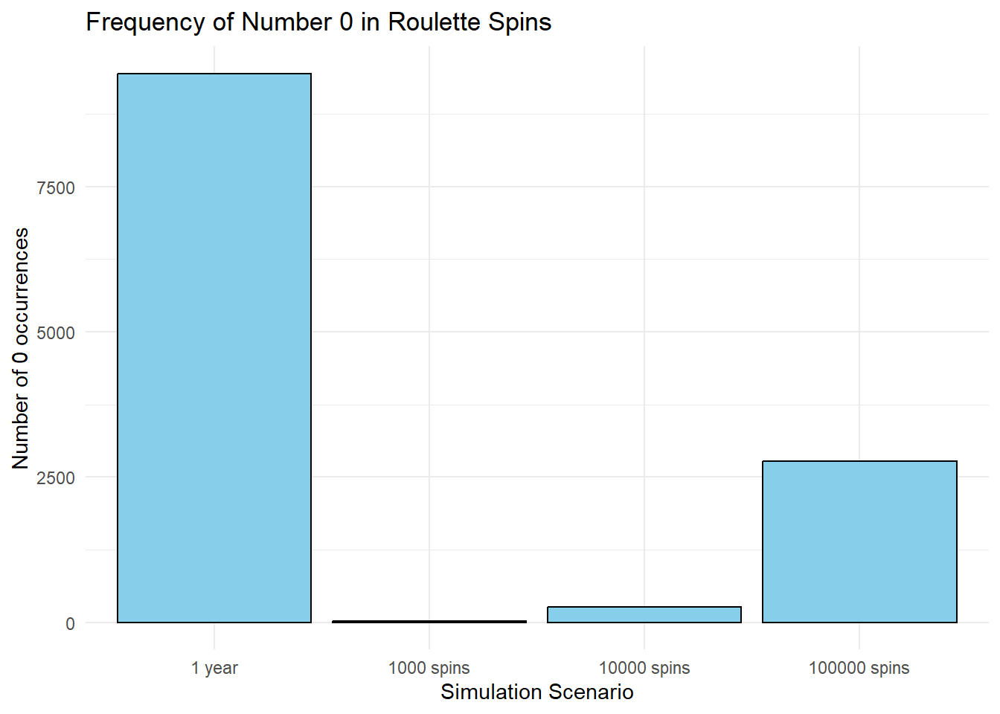

# Function to simulate roulette spins
simulate_roulette_spins <- function(n) {
set.seed(42) # Set seed for reproducibility
numbers <- sample(0:36, n, replace = TRUE)
return(numbers)
}
# Simulate roulette spins for different scenarios
spins_1000 <- simulate_roulette_spins(1000)
spins_10000 <- simulate_roulette_spins(10000)
spins_100000 <- simulate_roulette_spins(100000)
spins_1_year <- simulate_roulette_spins(365 * 24 * 40) # One year of spinsExploring the Frequency of Number 0 in a Year of Roulette Spins: A Simulation in R
Introduction
In this blog post, we’ll delve into the realm of casino roulette and use R simulations to estimate the frequency of the number 0 appearing over the span of a year (40 spins per hour x 24 hours x 365 days) . Roulette, a classic casino game, is known for its unpredictability, making it an interesting subject for probability exploration.
Simulating Roulette Spins
Analyzing Frequency of Number 0
Moving on, let’s analyze the frequency of the number 0 in each simulation. We’ll count the occurrences to gain insights into its distribution.
# Function to count occurrences of number 0
count_zero_occurrences <- function(spins) {
return(sum(spins == 0))
}
# Count occurrences for different scenarios
zero_count_1000 <- count_zero_occurrences(spins_1000)
zero_count_10000 <- count_zero_occurrences(spins_10000)
zero_count_100000 <- count_zero_occurrences(spins_100000)
zero_count_1_year <- count_zero_occurrences(spins_1_year)Visualizing the Results
# Create a bar plot for zero occurrences
library(ggplot2)
data <- data.frame(Scenario = c("1000 spins", "10000 spins", "100000 spins", "1 year"),
Zero_Count = c(zero_count_1000, zero_count_10000, zero_count_100000, zero_count_1_year))
plot <- ggplot(data, aes(x = Scenario, y = Zero_Count)) +
geom_bar(stat = "identity", fill = "skyblue", color = "black") +
labs(title = "Frequency of Number 0 in Roulette Spins",
x = "Simulation Scenario",
y = "Number of 0 occurrences") +
theme_minimal()
print(plot)
Results and Insights
After simulating roulette spins and analyzing the frequency of the number 0, we’ll gain valuable insights into the likelihood of encountering this specific outcome over different scenarios.
Conclusion
Exploring the probability of specific outcomes in casino games through simulation provides a fascinating glimpse into the world of chance. Whether you’re interested in statistics, data science, or simply curious, these simulations offer an engaging way to understand the dynamics of games of chance.
Feel free to experiment with different parameters, such as the number of spins or the distribution of numbers on the roulette wheel, and observe how the results change. Happy exploring!
Note: a fast search with bing about how many time does a roulette spin in a vegas casino : Explore
The average roulette wheel spins around 40-50 times per hour when playing roulette at a casino in Las Vegas1. However, this can vary depending on the type of wheel, the number of players at the table, and how quickly bets are placed1. If you want to know more about roulette and the game’s current standing around the world, you can check out this guide which provides a list of the most relevant roulette wheel odds and stats about the game, where you’ll learn everything about one of the world’s most popular casino games and how some odds work in your favor2.